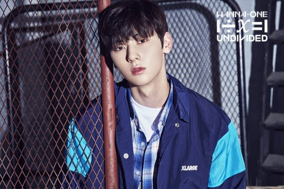

2012년 플레디스엔터테인먼트 소속의 5인조 보이그룹 뉴이스트로 데뷔했고, 2017년 4월 경 방영된 프로듀스 101 시즌2에서 최종 9위를 차지하면서 Wanna One의 멤버로 두 번째 데뷔를 했다. 포지션은 리드보컬이다. 워너원의 비주얼 담당 멤버 중 한 명이다.[25] 황제라고 불리는 뛰어난 비주얼, 큰 키와 압도적인 비율의 피지컬, 아름다운 음색과 안정적인 보컬에 뛰어난 라이브 실력, 스윗한 성격과 남을 배려하는 말투, 소속사 사장을 해도 좋을 엄청난 안목선구안으로 많은 팬들을 끌어모으는 입덕 멤버로 활약하고 있다. 요즘 꾸준한 몸매 관리와 운동으로 복근까지 갖춘 없는 게 없는 완벽한 남자가 되었다...
